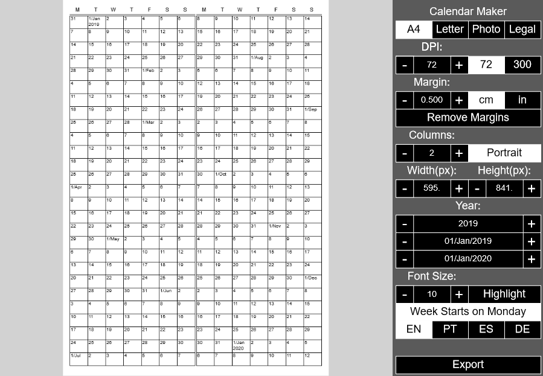

voltar
Utilidades
"ImageViewer" é um programa de visualização de imagens ultra minimalista para o Windows feito com C e SDL2 em 2020.
Para baixá-lo clique aqui. O código pode ser acessado em https://github.com/Introscopia/ImageViewer.
- Gerador de Ideias para Arte e Ilustração
Uma técnica relativamente comum no mundo das artes é a de usar recortes de revistas ou jornais para compor frases aleatórias,
gerando talvez algo inesperado e interessante, ou pelo menos inspirador. Esse projeto tem esse mesmo propósito. A interface
modular permite o usuário escolher e dispor cartões de várias categorias e gerar dados aleatórios para cada um. Monta-se,
portanto, um quadro com categorias e legendas delineando em termos gerais o conceito, e o gerador fornece os específicos!
Feito com p5.js.

- Gerador de Calendários
Um simples gerador de calendários no navegador com extensivas opções de costumização.
Feito com p5.js.

- Editor de Gráficos Vetoriais para Processing
O Processing tem um framework maravilhoso para a geração programática de gráficos vetoriais,
mas desenhar figuras digitando coordenadas pode ser bem penoso, ainda mais no caso das curvas de bezier. Uma alternativa é criar a
imagem um outro software e importá-la como .SVG, o que nem todos sabem fazer, especialmente principiantes. Isso também dificulta a
criação de figuras dinâmicas, onde você insere variáveis diretamente no código dos vértices e modifica a forma a cada quadro.
Então criei esse editor de gráficos vetoriais simples que exporta código em Processing. Ainda planejo adicionar mais funcionalidade
e eventualmente torná-lo um 'Tool', uma ferramenta integrada ao IDE do Processing.

- Processing IDE theme editor
Esse é outro projeto de ferramenta para o Processing. A versão 3.4 trouxe o arquivo unificado do 'tema' ou aparência do IDE, que
facilita a customização das cores e atributos da interface. Este editor, ainda incompleto, lhe da uma previa em tempo real de suas
mudanças e exporta a informação propriamente formatada para uso como arquivo tema. Ele ainda precisa ser mais amigável de se usar,
no momento o usuário ainda teria que aprender o nome de todos os campos do editor, que nem sempre são tão intuitivos. Idealmente
o usuário clicaria em uma zona para editá-la, mas isso seria toda uma outra história...

voltar